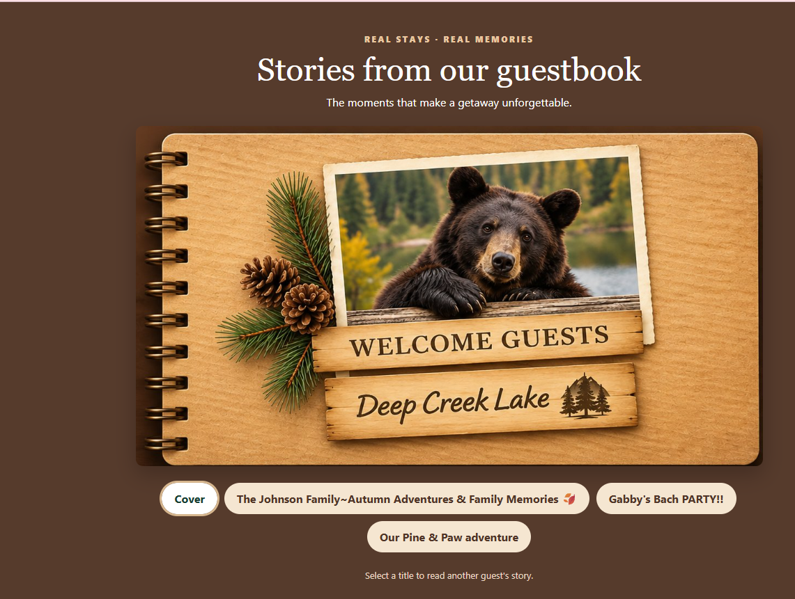

View the public guestbook → View the public guestbook →The goal
Replace a traditional paper guestbook with a digital experience that captures guest stories and photographs, supports owner review, and displays approved memories to prospective guests. The structured records also create a foundation for future operational reporting.
What I built and how
| Feature | Status | What it does | Built with |
|---|---|---|---|
| Guest submission form | Live | Collects a guest's story, optional name and stay date. | HTML, JavaScript, Cloudflare Workers |
| Photo submissions | Live | Allows guests to add photographs to their memories. | JavaScript, database-backed application |
| Owner review dashboard | Live | Lets the owner review and approve or reject submitted content. | Cloudflare Workers, D1, SQL |
| Public showcase | Live | Displays approved stories through an interactive notebook interface. | HTML, CSS, JavaScript |
| QR-code access | Available | Provides a direct link guests can scan to open the guestbook on a phone. | QR code, web URL |
| Guest engagement reporting | Planned | Analyze submission counts, activity over time and review outcomes using aggregate data. | SQL, Python or BI dashboard |
How the data workflow works
Guest submits a memory and optional photos
|
v
Application validates the submission
|
v
Store structured records in D1
|
v
Owner reviews the submission
|
+-------+-------+
| |
Approved Not approved
| |
v v
Public showcase Hidden from showcase
SQL example: monthly submission counts
The query below illustrates a possible analytics report. It is a conceptual example, not a verified query against the production database schema.
-- Example schema only; confirm actual table and column names
SELECT strftime('%Y-%m', created_at) AS month,
COUNT(*) AS submissions
FROM memories
GROUP BY strftime('%Y-%m', created_at)
ORDER BY month;
Skills demonstrated
- Designing a database-backed workflow for guest-generated records
- Using SQL and relational data to support review and publication decisions
- Separating private submissions from approved public content
- Planning operational KPIs and aggregate reporting for a real hospitality business
- Building a responsive, mobile-friendly web interface
Privacy: No private guest records, passwords, tokens or production database exports are included in this portfolio. The public demo shows owner-approved content only.
← Back to all projects